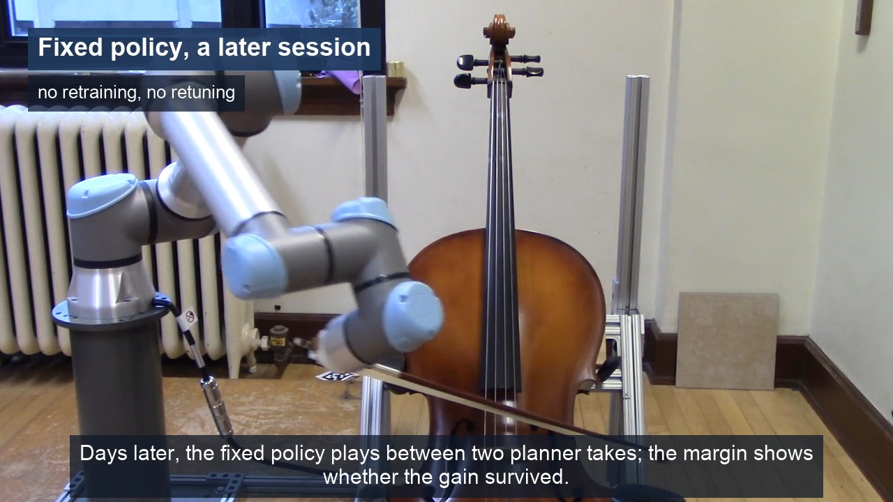

Play demo · 2:31Residual RL for Precise, Contact-Rich Manipulation
We developed a residual reinforcement learning framework for a UR5e robotic cellist, using a reward classifier trained on human ratings to guide bowing and improve sound quality.